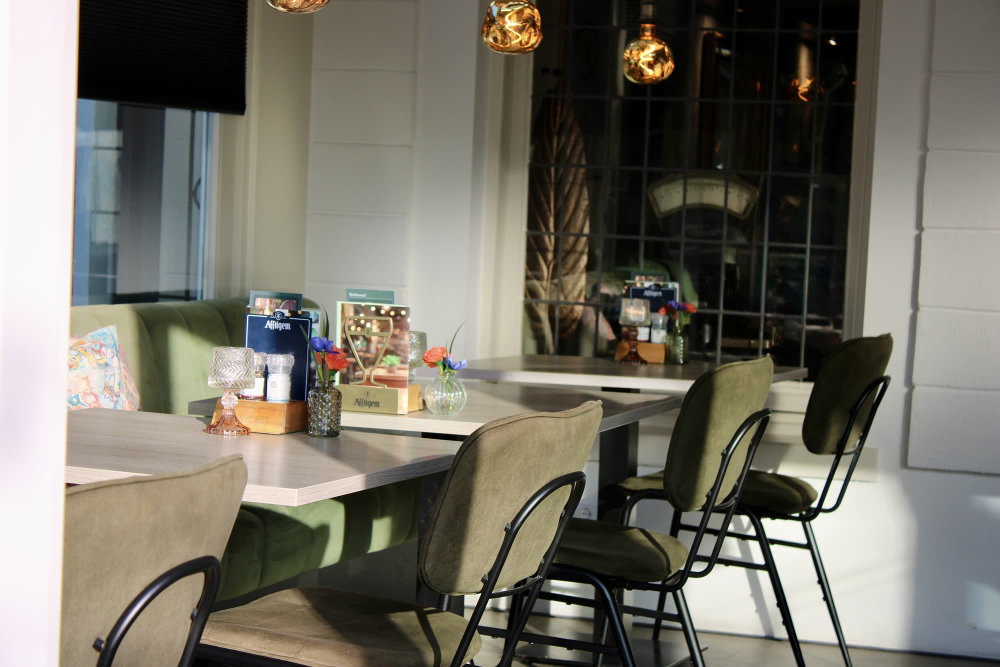
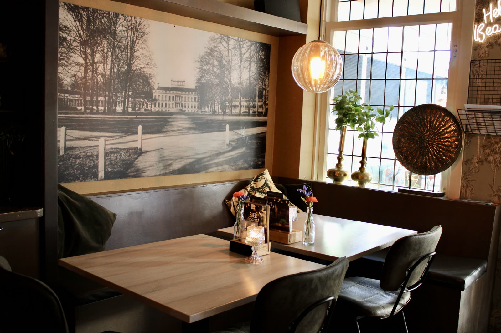
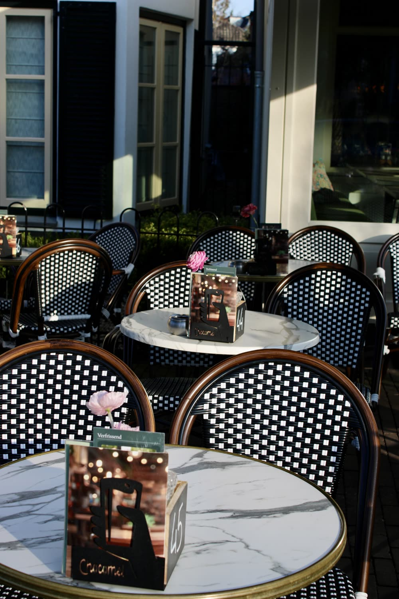
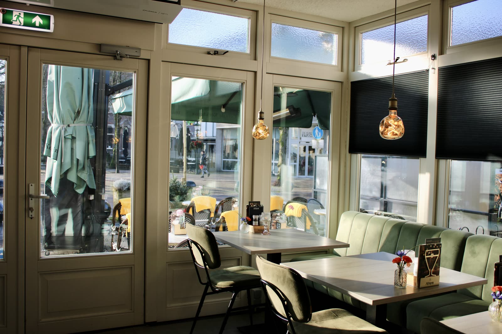
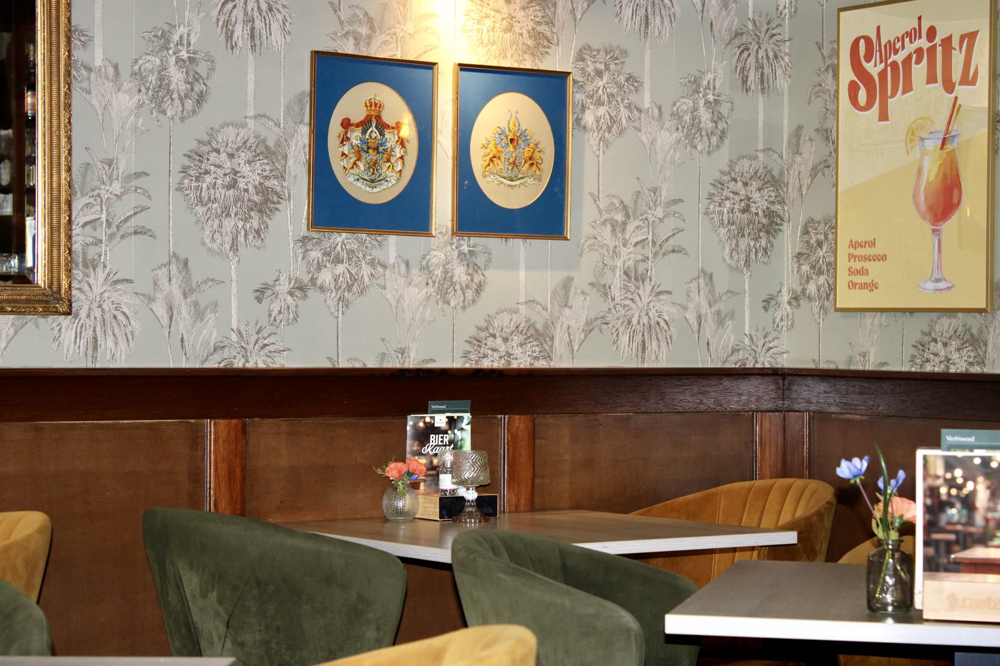

Aan de Brink in het hart van Baarn
Grand Café De Kerkbrink
Een kopje koffie met vers gebak, een lunch, een uitgebreid diner of een borrel met speciaalbier van de tap. In ons historische, monumentale pand met een nieuw interieur.
Het is aangenaam vertoeven aan de Brink
Ons team staat vriendelijk, gastvrij en vakbekwaam voor u klaar en draagt met zorg bij aan een gezellig bezoek. In het historische, monumentale pand geniet u van ons nieuwe interieur en een vriendelijk geprijsde nieuwe menukaart, vol smakelijke gerechten met verse producten.
Kom gerust met uw familie of gezin: we hebben een kindermenu met een verrassing, waar kinderen graag voor terugkomen. En op ons zonnige terras kijkt u uit over de mooie Brink in het hart van Baarn.
Wij heten u van harte welkom.


Sfeerimpressie


Vorstelijk Baarn Informatiepunt
De Kerkbrink is een Vorstelijk Baarn Informatiepunt. Hier krijgt u toeristische informatie, koopt u wandel- en fietsroutes en begint u vanuit ons grand café prima aan een wandeling of fietstocht langs al het moois dat Vorstelijk Baarn te bieden heeft.
Naar vorstelijkbaarn.nl- Toeristische informatie over Baarn
- Wandel- en fietsroutes te koop
- Start en eindig uw tocht met koffie of lunch aan de Brink
Reserveren
Bel ons op 035-542 55 85, mail naar info@dekerkbrink.nl of vul het formulier in.
Een reservering via het formulier is pas geldig na onze bevestiging. Reserveren voor dezelfde dag kan alleen telefonisch.
Bel 035-542 55 85Werken bij De Kerkbrink
Op dit moment zijn alle vacatures vervuld, maar je gegevens achterlaten kan altijd. Wie weet komt er een plekje voor je vrij! Stuur je cv naar info@dekerkbrink.nl of bel even naar 035-542 55 85.
Contact
Grand Café De Kerkbrink
Brink 12
3741 AL Baarn
Openingstijden
| Maandag | 10.00 – 22.00 |
|---|---|
| Dinsdag | 10.00 – 22.00 |
| Woensdag | 10.00 – 22.00 |
| Donderdag | 10.00 – 22.00 |
| Vrijdag | 10.00 – 24.00 |
| Zaterdag | 10.00 – 24.00 |
| Zondag | 11.00 – 22.00 |
Lunchkeuken 11.30 – 17.00, diner vanaf 17.00. Alcohol schenken we niet onder de 18 (NIX18).